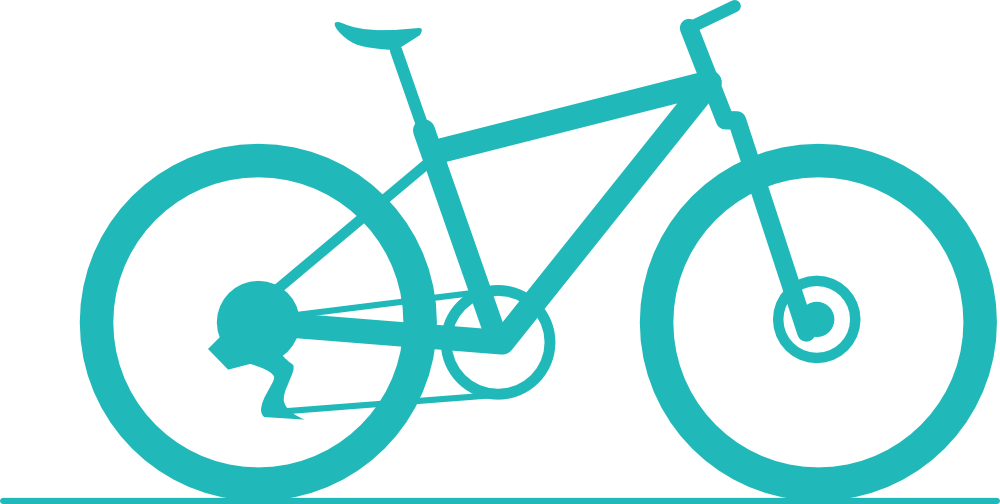
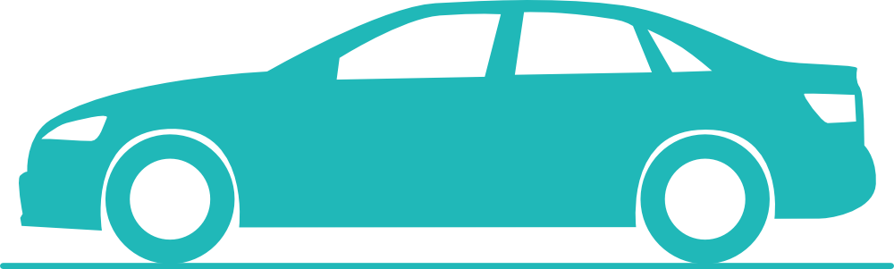
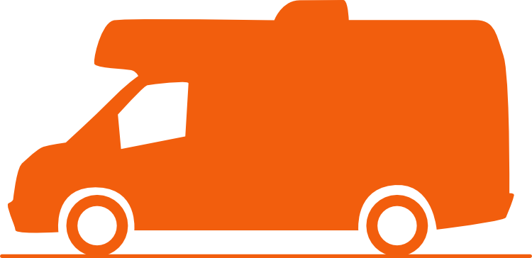
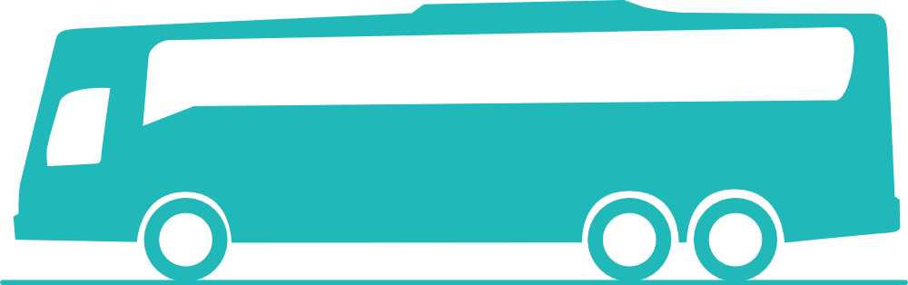

There is many transport/traveling options to suit budgets, time and level of independence.
Explore the options below to help find which one suits you.

You can walk or cycle around New Zealand if you wish. You will need to bring or buy on arrival your own gear.
I would like to add a caution here though. While under the New Zealand Road Rules walkers and cyclists are supposed to be given 1.5m clearance from any passing vehicle. This often can prove difficult due to very little road verge (berm) for you to walk/cycle on.
Or you are walking/cycling on a twisty narrow road with very little visibility for approaching traffic. Please note I am not referring to minor roads when I offer this caution.
As you are aware you will see New Zealand at a much slower pace than most and my route timings are no longer relevant becuase they are worked out on driving.
Hitchhiking is no longer as safe as it was back in the 1990’s and before. While New Zealand is a relatively safe country and 99% of visitors will have a pleasant experience traveling the country.
Over the years there has been instances of hitchhikers being assaulted and murdered,

For many budget traveler's buying a car/van in one of the major cities and then driving until it hopefully gets you to where you are going, is a time honoured tradition the world over.
Your vehicle’s quality is luck of the draw and probably will be from someone just finishing their New Zealand travels. You will find noticeboards in hostels with people selling their vehicle. New Zealanders use a website/app called TradeMe to buy and sell through (like e-bay), you may have difficulty registering with the site because it is locked down for New Zealand based people as it try's to avoid scammers.
A car to be driven on New Zealand roads needs a Warrant Of Fitness (WOF) to prove worthiness. The WOF is valid for 6 - 24 months depending on the vehicles age. All vehicles must have a current registration (licence fee) displayed in the windscreen. If the vehicle is a hybrid or diesel then it will also need valid Road User Charges (RUC). RUCs need to be bought in advance of the kilometres you wish to travel, they are bought in 1,000 km units. The easiest option to ensure compliance is look for a VTNZ (Vehicle Testing New Zealand) and talk with them. RUC’s and Registration can be bought at any Post Shop (Post Office).
There are many different rental car companies from the big names like Avis and Hertz to small local companies like Ezi, Rent-a-Dent and Pegasus. Explore what suits your budget.

There is a multitude of Rental Camper companies from the big names like Maui and Britz to local companies like Ezi and Wicked Campers. Do lots of research you’ll find one that suits your style and budget.
Camper vans are a very popular method of seeing New Zealand. They do come with a few ‘hidden’ costs like parking. With free camping being challenging in many major locations you probably will find yourself paying anywhere from $25-80 (or more) a night just to park your van. The vans are not small vehicles and you may also find parking is difficult when exploring towns and cities (most of the vans will not fit in parking buildings).
Personally I have found that very little in New Zealand is far form anything so hiring a car, staying in motels, backpackers etc, will have you easily accessing what you want to see with little vehicle stresses.
But equally how you choose to see our country is your choice based on the experience you plan for.

For seeing New Zealand there is really only two bus companies that transport people in a conventional bus transport model. Intercity that covers pretty much all of New Zealand and Atomic Shuttle that covers the main routes of the South Island.
If you choose this option you probably will have little use for this app apart from planning your trip.
Kiwi Experience and Stray are the two budget traveler's bus option. Both of the companies target the 18-30 year age group. They offer a jump on jump off service and follow their prescribed routes.
Kiwi Experience is the original of this style of travel, Stray was created by one of the original Kiwi Experience crew and he went out on his own.
There is many different tour bus options to see the country. if you are intending to travel the country in this manner then you will have little use for this app outside your initial planning.
But there is many short Tour bus trips that are worth considering if you are driving yourself around New Zealand.
Paihia - Cape Reinga, Nelson - Able Tasman, Queenstown - Milford Sound are all options worth considering.
Passenger rail has largely been disestablished in New Zealand with successive governments cutting costs and privatising the rail network.
Currently there is only three rail journeys available for passengers: the Northern Explorer (Auckland/Wellington), Coastal Pacific (Picton/Christchurch), TranzAlpine (Christchurch/Greymouth). All are minimum 1 day trips.
The TranzAlpine is considered one of the great rail journeys crossing the Southern Alps. You can easily pick it up in either Greymouth or Christchurch and do this trip as a day return journey. The day trip is a popular choice among many who do this trip.
For small local travel around towns/cities, all of the major locations in New Zealand have a good taxi or Uber service.
Just like the world over taxies usually are little more pricey vs Uber. You can book them either via a phone call or on their respective apps.